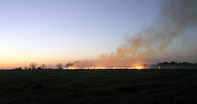
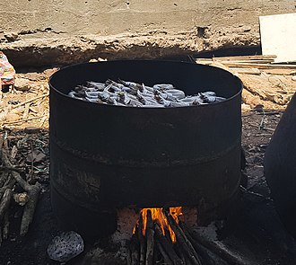

SOURCES
Anthropogenic (human-made) sources
- Stationary sources include:
- fossil-fuel power plants and biomass power plants both have smoke stacks (see for example environmental impact of the coal industry)[38]
- Oil and gas sites that have methane leaks

- burning of traditional biomass such as wood, crop waste and dung. (In developing and poor countries,[43] traditional biomass burning is the major source of air pollutants.[44][45] It is also the main source of particulate pollution in many developed areas including the UK & New South Wales.[46][47] Its pollutants include PAHs.[48])
- a 2014 study found that in China equipment-, machinery-, and devices-manufacturing and construction sectors contributed more than 50% of air pollutant emissions.[50][better source needed] This high emission is due to high emission intensity and high emission factors in its industrial structure.[51]
- waste incineration (incinerators as well as open and uncontrolled fires of mismanaged waste, making up about a fourth of municipal solid terrestrial waste)[54][55]

- Mobile sources include motor vehicles, Trains (particularly diesel locomotives and DMUs), marine vessels and aircraft[57] as well as rockets and re-entry of components and debris.[58] The air pollution externality of cars enters the air from the exhaust gas and car tires (including microplastics[59]). Vehicles were reported to be "producing about one-third of all U.S. air pollution"[60][better source needed] and are a major driver of climate change.[61][62]
- Fumes from paint, hair spray, varnish, aerosol sprays and other solvents. These can be substantial; emissions from these sources was estimated to account for almost half of pollution from volatile organic compounds in the Los Angeles basin in the 2010s.[68]
Waste deposition in landfills produces methane.[69]
Nuclear weapons, toxic gases, germ warfare, and rocketry are examples of military resources.[70]
Agricultural emissions and emissions from meat production or livestock contribute substantially to air pollution[71][72]
Natural Sources

- Dust from natural sources, usually large areas of land with little vegetation or no vegetation
- Methane, emitted by the digestion of food by animals, for example cattle
- Radon gas from radioactive decay within the Earth's crust. Radon is a colorless, odorless, naturally occurring, radioactive noble gas that is formed from the decay of radium. It is considered to be a health hazard. Radon gas from natural sources can accumulate in buildings, especially in confined areas such as the basement and it is the second most frequent cause of lung cancer, after cigarette smoking.
- Smoke and carbon monoxide from wildfires. During periods of active wildfires, smoke from uncontrolled biomass combustion can make up almost 75% of all air pollution by concentration.[75]
- Vegetation, in some regions, emits environmentally significant amounts of volatile organic compounds (VOCs) on warmer days. These VOCs react with primary anthropogenic pollutants – specifically, NOx, SO2, and anthropogenic organic carbon compounds – to produce a seasonal haze of secondary pollutants.[76] Black gum, poplar, oak and willow are some examples of vegetation that can produce abundant VOCs. The VOC production from these species result in ozone levels up to eight times higher than the low-impact tree species.[77]
- Volcanic activity, which produces sulfur, chlorine, and ash particulates[78]